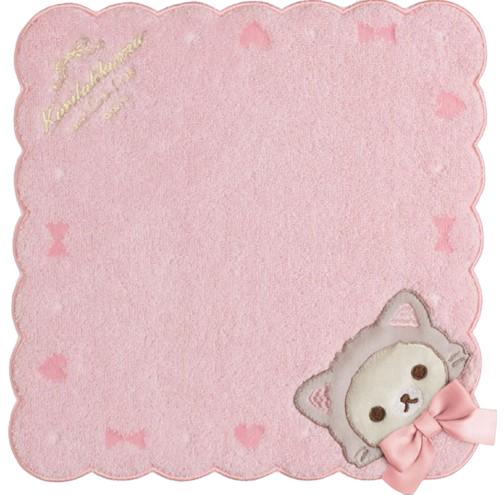
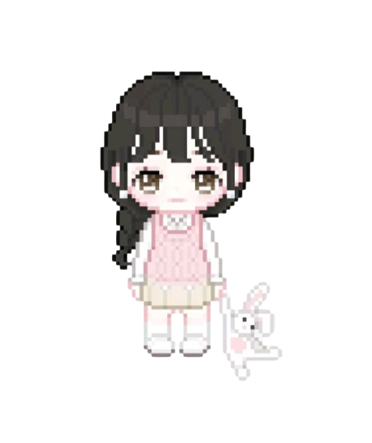

Every time we say goodnight, I silently say good morning again. Every time I get the chance to talk to you, I never want the night to end. Seeing
you is just euphoric.

I'll keep dreaming of you through countless seasons, writing endless songs until my heart has no more pages left—though I doubt that will ever happen.
I've had more conversations with you in my head than I've had with my classmates this school year. I think we still have ink left, so our story is not ending here.
Keep smiling today, next week, next month, next year, next decade, and even for a century. Don't hide that cute little dimple of yours.
I don't know why, but most of the songs I listen to somehow remind me of you. Back then, I hated the thoughts that kept me wide awake, but now I don't
mind them when
they're about you.
If only the walls in my room could talk, you'd wonder what they'd say—it'd all be about my thoughts of you. Nothing feels better than falling asleep and
dreaming of you.
You are the thought I'd love to think about forever. I wonder when the time will come when I'll think of you for the second time because you've never left my mind.
How come everything about you, in every way? In every smiling face I see, your face appears in my mind so tenderly. Every time I go out, I look for your face.
I kind of envy the people who live near you. If I lived close to you, I'd probably visit your house and give you some random things.
I'm thankful that I was born in this place and that I get the chance to see your angelic face. I could just stare at your picture until I fall asleep, and after
that, I'll dream of you.
